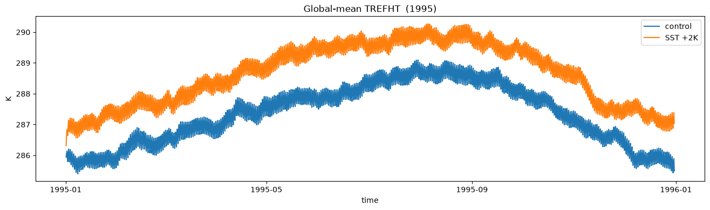
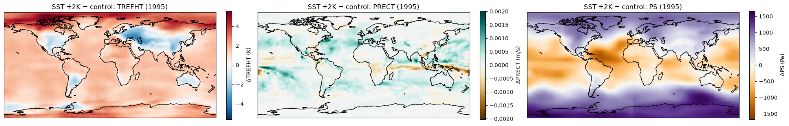
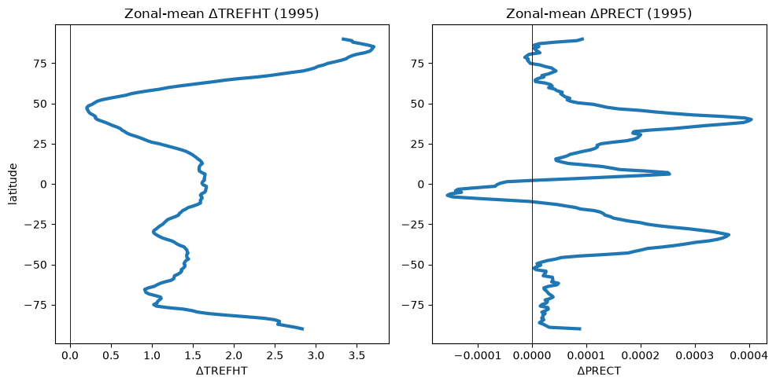
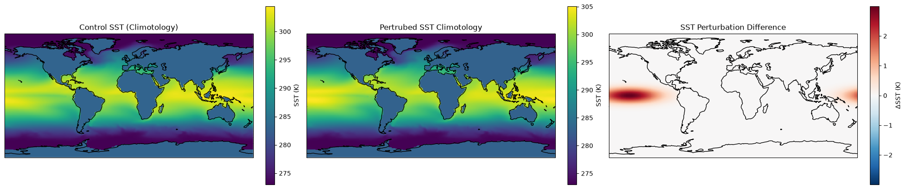
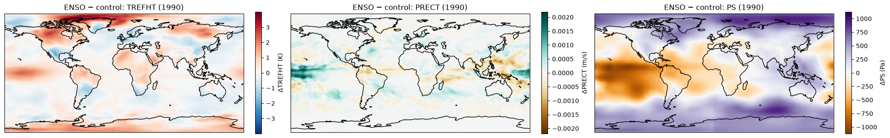

CAMulator Exercises: CESM Tutorial: Summer 2026#
CAMulator is a global, machine-learned autoregressive emulator trained with data from the Community Atmosphere Model. See the version 1 publication here: https://arxiv.org/pdf/2504.06007#
Camulator was trained and is run using the CREDIT package.
The exercises below walk you through running a one-year control simulation with prescribed SST, CO2, Sea Ice, and Solar Insolation. We then run one simulation with a +2K perturbation to the SST (everything else same as control), and a second simulation using climitological SST with an idealized Gaussian ENSO SST signature. We then investigate some dynamic response to these perturbations.
Simulations require a GPU and take approximately 8-10 minutes per annual simulation.
Run the cell below to link to a pre-installed environment. you ONLY NEED TO RUN THIS ONCE. After executing, wait a few moments, and you should then be able to select the credit_cesm environment (from the dropdown in the upper right corner) and then execute the remainder of the notebook.
!conda config --add envs_dirs /glade/work/dgagne/credit_cesm_envs/ ## ONLY RUN ONCE
import os, sys, glob, subprocess, shlex
from pathlib import Path
import os, pty, select
import yaml
import numpy as np
import pandas as pd
import xarray as xr
import matplotlib.pyplot as plt
import cartopy.crs as ccrs
1. Helpers#
Address config keys by dotted path, write a per-experiment config copy, list the forecast’s years, perturb the per-year forcing store, drive the CREDIT CLI, and load rollouts back.
def write_config(overrides: dict, out_path: Path) -> Path:
"""Deep-copy BASE_CONFIG, apply {dotted_key: value} overrides, dump to out_path.
Also injects the run options set in the "Run options" cell below: the output variable list
(SAVE_VARS, always) and — only when RUN_MODE == 'batch' — the editable PBS options
(PBS_OPTIONS). Locked pbs keys (conda / job_name / ncpus / ngpus) are left exactly as-is.
"""
with open(BASE_CONFIG) as f:
conf = yaml.safe_load(f)
for dotted, value in overrides.items():
set_by_path(conf, dotted, value)
# user-selected output variables (short names -> full "CESM/.../<short>" keys)
set_by_path(conf, 'inference.output.variables', [{'name': SHORT_TO_FULL[s]} for s in SAVE_VARS])
# batch: apply the editable PBS options (credit submit reads the pbs: section)
if RUN_MODE == 'batch':
conf.setdefault('pbs', {}).update(PBS_OPTIONS)
out_path.parent.mkdir(parents=True, exist_ok=True)
with open(out_path, 'w') as f:
yaml.safe_dump(conf, f, sort_keys=False)
return out_path
def forecast_years(start_datetime, length) -> list:
"""Years the forecast window spans (dynamic forcing is one Zarr per year), so we only perturb
the files actually read. Follows the selected start year + forecast_length."""
start = pd.Timestamp(start_datetime)
end = start + pd.Timedelta(length)
return list(range(start.year, end.year + 1))
# Encoding keys inherited from the source Zarr that clash with a fresh (v3) write.
_STRIP_ENC = ("chunks", "preferred_chunks", "compressor", "compressors",
"filters", "codecs", "serializer")
def perturb_forcing(src_template: str, dst_dir: Path, years, edit_fn) -> str:
"""Write a perturbed copy of the per-year forcing store.
For each year in `years`, read the control `forcing_%Y.zarr`, apply edit_fn(ds)->ds, and
write a perturbed `forcing_<year>.zarr` into dst_dir — preserving the `forcing_%Y.zarr`
naming so the config's `%Y` template still resolves. Time is chunked by 1 (full otherwise)
to keep the rollout's per-step reads cheap. Returns the dst path *template* (with `%Y`).
Only the dynamic-forcing fields are touched; the prognostic initial condition still comes
from the config's (unchanged) prognostic store, so every run starts from the same state.
"""
dst_dir = Path(dst_dir)
dst_dir.mkdir(parents=True, exist_ok=True)
for y in years:
ds = xr.open_zarr(src_template.replace('%Y', str(y))).load()
ds = edit_fn(ds)
ds = ds.chunk({'time': 1, **{d: -1 for d in ds.dims if d != 'time'}})
for v in ds.variables: # drop inherited encoding (chunks/codecs)
for k in _STRIP_ENC:
ds[v].encoding.pop(k, None)
out = dst_dir / f'forcing_{y}.zarr'
ds.to_zarr(out, mode='w')
print(f' wrote {out}')
return str(dst_dir / 'forcing_%Y.zarr')
# --- the actual interventions (one field each; everything else stays at control) ---
def add_sst(delta_k):
"""Uniform SST warming: SST -> SST + delta_k everywhere, all times."""
def _edit(ds):
# ds['SST'] = ds['SST'] + float(delta_k)
ds['SST'].values = np.where(ds['SST'].values != 283, ds['SST'].values + float(delta_k), ds['SST'].values) # only apply over ocean
return ds
return _edit
def scale_co2(factor):
"""CO2 increase: co2vmr_3d -> factor * co2vmr_3d (e.g. 2.0 = doubling)."""
def _edit(ds):
ds['co2vmr_3d'] = ds['co2vmr_3d'] * float(factor)
return ds
return _edit
def run_credit(config_path: Path, mode='none', procs=4):
"""Run the rollout, interactively on THIS node or as a submitted PBS batch job.
RUN_MODE == 'interactive' -> `credit rollout` on this node's GPU (needs a GPU here).
RUN_MODE == 'batch' -> `credit submit --mode rollout --cluster casper`, which builds a
PBS job from the config's pbs: section and submits it via qsub.
Output is forwarded through a pseudo-terminal (pty) so CREDIT's tqdm bar refreshes a single
line interactively; in batch mode this just streams the submission / job-id output.
"""
if RUN_MODE == 'batch':
cmd = f'credit submit --mode rollout --cluster casper -c {shlex.quote(str(config_path))}'
else:
cmd = f'{CREDIT_CLI} -c {shlex.quote(str(config_path))} -m {mode} -p {procs}'
print('$', cmd, flush=True)
main, worker = pty.openpty()
proc = subprocess.Popen(shlex.split(cmd), stdout=worker, stderr=worker, close_fds=True)
os.close(worker) # parent only reads the main end
try:
while True:
if select.select([main], [], [], 0.1)[0]:
try:
data = os.read(main, 1024)
except OSError: # main closes when the child exits
break
if not data:
break
sys.stdout.write(data.decode(errors='replace'))
sys.stdout.flush()
elif proc.poll() is not None:
break
finally:
os.close(main)
proc.wait()
if proc.returncode != 0:
raise RuntimeError(f'command exited with code {proc.returncode}')
return proc.returncode
def load_rollout(output_dir, year=None, variables=None):
"""Open the NetCDF rollout (monthly files per the config) as one time-ordered dataset.
year: keep only files for that valid year (files are named YYYY-MM.nc) — use when a run
spans more than one year so you don't open the whole rollout.
variables: subset to these (those that exist) before returning, so a later .load() reads only
what you actually need.
"""
files = sorted(glob.glob(os.path.join(str(output_dir), '**', '*.nc'), recursive=True))
if year is not None:
files = [f for f in files if os.path.basename(f).startswith(f'{year}')]
if not files:
raise FileNotFoundError(f'No .nc files (year={year}) under {output_dir}')
ds = xr.open_mfdataset(files, combine='by_coords')
if variables is not None:
present = [v for v in variables if v in ds.variables]
missing = set(variables) - set(present)
if missing:
print(f' (note: not in output, skipped: {sorted(missing)})')
ds = ds[present]
return ds
def global_mean(da, lat_name='latitude'):
"""Cosine-latitude-weighted global mean, collapsing lat/lon."""
lat = da[lat_name]
w = np.cos(np.deg2rad(lat))
lon_name = 'lon' if 'lon' in da.dims else [d for d in da.dims if d not in (lat_name,)][ -1]
return da.weighted(w).mean(dim=[lat_name, lon_name])
def get_by_path(d, dotted):
for k in dotted.split('.'):
d = d[k]
return d
def set_by_path(d, dotted, value):
keys = dotted.split('.')
for k in keys[:-1]:
d = d[k]
d[keys[-1]] = value
### NOT USER EDITS ###
BASE_CONFIG = Path('/glade/campaign/cisl/aiml/credit/cesm_exercise//camulator_cesm_tutorial_casper.yml')
# Unified CREDIT CLI. `credit rollout` -> credit/applications/rollout_gen2.py.
CREDIT_CLI = 'credit rollout'
# Dotted keys into the config.
SAVE_LOC_KEY = 'save_loc'
DYN_FORCING_KEY = 'data.source.CESM.variables.dynamic_forcing.path'
OUTPUT_KEY = 'inference.save_forecast'
FCST_START_KEY = 'inference.single_forecast.start_datetime'
FCST_LEN_KEY = 'inference.single_forecast.forecast_length'
# --- derive paths from the config ------------------------------------------------------
with open(BASE_CONFIG) as f:
CONF = yaml.safe_load(f)
ROLLOUT_ROOT = Path(os.path.expandvars(get_by_path(CONF, OUTPUT_KEY))) # .../camulator_tutorial/rollout
RUN_ROOT = ROLLOUT_ROOT.parent # .../camulator_tutorial
FORCING_ROOT = RUN_ROOT / 'forcing' # perturbed forcing (sibling of rollout)
# Shared, read-only control forcing (a %Y forcing template): read from, never written to.
CONTROL_FORCING = os.path.expandvars(get_by_path(CONF, DYN_FORCING_KEY))
for p in (RUN_ROOT, FORCING_ROOT, ROLLOUT_ROOT):
p.mkdir(parents=True, exist_ok=True)
print('Config :', BASE_CONFIG, '(exists:', BASE_CONFIG.exists(), ')')
print('Output base :', RUN_ROOT, '(from inference.save_forecast)')
print(' rollout/ :', ROLLOUT_ROOT)
print(' forcing/ :', FORCING_ROOT)
print('Control forcing :', CONTROL_FORCING)
Config : /glade/work/cbecker/CREDIT-visit/miles-credit/config/gen_2/camulator/camulator_cesm_tutorial_casper.yml (exists: True )
Output base : /glade/derecho/scratch/cbecker/camulator_tutorial (from inference.save_forecast)
rollout/ : /glade/derecho/scratch/cbecker/camulator_tutorial/rollout
forcing/ : /glade/derecho/scratch/cbecker/camulator_tutorial/forcing
Control forcing : /glade/campaign/cisl/aiml/credit/cesm_exercise/forcing/dynamic_forcing/%Y_forcing.zarr
Run options#
Four knobs, applied automatically whenever an experiment cell builds its config.
1 — Simulation year (SIM_YEAR). Valid 1980–2014. Sets single_forecast.start_datetime to <year>-01-01; the forecast length stays whatever the config specifies.
2 — How to run (RUN_MODE).
'interactive'(default) — runscredit rollouton this node; needs a GPU here.'batch'— submits a PBS job withcredit submit --mode rollout --cluster casper, built from the config’spbs:section. Use this if you don’t have an interactive GPU; the output is the submitted job id (check it withqstat).
3 — PBS options (PBS_OPTIONS, batch only). Pre-filled from the config; edit walltime, mem, gpu_type, project as needed. Locked (not exposed): conda, job_name, ncpus, ngpus.
4 — Output variables (SAVE_VARS). Short names from the table below; the default matches the config’s current set. Fewer variables → smaller, faster output. 3-D fields (U, V, T, Qtot) are large.
Available variables#
short |
dims |
description |
units |
|---|---|---|---|
|
3D |
Zonal wind |
m/s |
|
3D |
Meridional wind |
m/s |
|
3D |
Temperature |
K |
|
3D |
Specific total water (vapor + condensate) |
kg/kg |
|
2D |
Surface pressure |
Pa |
|
2D |
2 m reference-height temperature |
K |
|
2D |
Total precipitation (accumulated) |
m/6h · ×4000 = mm/day |
|
2D |
Surface (radiative) temperature |
K |
|
2D |
High cloud fraction |
0–1 |
|
2D |
Low cloud fraction |
0–1 |
|
2D |
Mid-level cloud fraction |
0–1 |
|
2D |
Zonal surface wind stress |
N/m² |
|
2D |
Meridional surface wind stress |
N/m² |
|
2D |
10 m wind speed |
m/s |
|
2D |
Surface moisture flux (accumulated) |
m/6h |
|
2D |
Downwelling shortwave at surface (accum.) |
J/m²/6h · ÷21600 = W/m² |
|
2D |
Downwelling longwave at surface (accum.) |
J/m²/6h |
|
2D |
Upwelling shortwave at surface (accum.) |
J/m²/6h |
|
2D |
Upwelling longwave at surface (accum.) |
J/m²/6h |
|
2D |
Surface sensible heat flux (accum.) |
J/m²/6h |
|
2D |
Surface latent heat flux (accum.) |
J/m²/6h |
|
2D |
Upwelling solar flux at top of atmosphere |
W/m² |
|
2D |
Upwelling longwave at top of model (OLR) |
W/m² |
# =========================== RUN OPTIONS =====================================
# 1) Which year to simulate (valid 1980-2014). Sets single_forecast.start_datetime = <year>-01-01;
# the forecast length stays whatever the config specifies.
SIM_YEAR = 1995
START_DATETIME = f'{SIM_YEAR}-01-01T00:00Z'
FORECAST_LENGTH = get_by_path(CONF, FCST_LEN_KEY) # config-derived, e.g. '30d' / '364d'
# 2) How to run: 'interactive' runs `credit rollout` on THIS node (needs a GPU here);
# 'batch' submits a PBS job via `credit submit --mode rollout --cluster casper`
# (which builds the job from the config's pbs: section below).
RUN_MODE = 'interactive' # 'interactive' | 'batch'
# 3) PBS options for batch. Defaults pulled from the config's pbs: section; the locked keys
# (conda / job_name / ncpus / ngpus) are not exposed. Edit before submitting, e.g.
# PBS_OPTIONS['walltime'] = '01:00:00'
_PBS_LOCKED = {'conda', 'job_name', 'ncpus', 'ngpus'}
PBS_OPTIONS = {k: v for k, v in (get_by_path(CONF, 'pbs') or {}).items() if k not in _PBS_LOCKED}
# 4) Which variables to save (short names; see the "Available variables" table above).
# Default = the config's current set. Fewer vars -> smaller, faster output. 3-D fields are big.
SAVE_VARS = ['Qtot', 'PS', 'TREFHT', 'PRECT', 'CLDHGH', 'TAUX', 'SHFLX', 'LHFLX']
# short-name -> full output key ("CESM/<group>/<dim>/<short>"), built from the config's var groups
_VARS = get_by_path(CONF, 'data.source.CESM.variables')
SHORT_TO_FULL = {v: f'CESM/{grp}/{dim}/{v}'
for grp in ('prognostic', 'diagnostic')
for dk, dim in (('vars_3D', '3d'), ('vars_2D', '2d'))
for v in (_VARS.get(grp, {}).get(dk) or [])}
_bad = [v for v in SAVE_VARS if v not in SHORT_TO_FULL]
assert not _bad, f'Unknown variable(s) {_bad}. Available: {sorted(SHORT_TO_FULL)}'
print('SIM_YEAR :', SIM_YEAR, '->', START_DATETIME, '| length', FORECAST_LENGTH)
print('RUN_MODE :', RUN_MODE)
print('PBS_OPTIONS :', PBS_OPTIONS, ' (batch only)')
print('SAVE_VARS :', SAVE_VARS)
SIM_YEAR : 1999 -> 1999-01-01T00:00Z | length 364d
RUN_MODE : batch
PBS_OPTIONS : {'project': 'NAML0001', 'walltime': '00:30:00', 'mem': '64GB', 'gpu_type': 'h100'} (batch only)
SAVE_VARS : ['Qtot', 'PS', 'TREFHT', 'PRECT', 'CLDHGH', 'TAUX', 'SHFLX', 'LHFLX']
2. Control run#
The origianl baseline everything is differenced against. Uses the shared control forcing untouched —
we only redirect the output to /glade/derecho/$USER/camulator_tutorial/rollout/control/.
EXPERIMENT = 'control'
control_out = ROLLOUT_ROOT / EXPERIMENT
# Control forcing is left as-is (shared, read-only); we redirect output and set the sim year.
control_cfg = write_config(
overrides={
OUTPUT_KEY: str(control_out) + '/',
FCST_START_KEY: START_DATETIME,
},
out_path=control_out / 'config.yml',
)
run_credit(control_cfg)
$ credit submit --mode rollout --cluster casper -c /glade/derecho/scratch/cbecker/camulator_tutorial/rollout/control/config.yml
INFO:credit.cli._submit:
========================================================
Ensemble rollout plan
========================================================
Cluster : casper
Account : NAML0001
Config : /glade/derecho/scratch/cbecker/camulator_tutorial/rollout/control/config.yml
Init times : 1 (1 per job)
Ensemble size : 1 → 1 total forecasts
Parallel jobs : 1 (all start at once, no dependencies)
GPUs per job : 1
Walltime/job : 00:30:00
========================================================
3. Experiment A — uniform SST warming (+2 K)#
Intervention: SST +2K over the ocean, all times (CO2/ice/solar untouched).
Expectation: a moister atmosphere (precipitable water ≈ +7%/K) but weaker precip response(≈ +1–3%/K).
EXPERIMENT = 'sst_plus2K'
DELTA_SST = 2.0 # K
years = forecast_years(START_DATETIME, FORECAST_LENGTH)
print('Perturbing forcing years:', years)
# 1) perturbed forcing copy -> forcing/<experiment>/forcing_%Y.zarr
sst_forcing = perturb_forcing(
src_template=CONTROL_FORCING,
dst_dir=FORCING_ROOT / EXPERIMENT,
years=years,
edit_fn=add_sst(DELTA_SST),
)
# 2) config copy: perturbed forcing, output dir, and the selected sim year
sst_cfg = write_config(
overrides={
DYN_FORCING_KEY: sst_forcing,
OUTPUT_KEY: str(ROLLOUT_ROOT / EXPERIMENT) + '/',
FCST_START_KEY: START_DATETIME,
},
out_path=ROLLOUT_ROOT / EXPERIMENT / 'config.yml',
)
# 3) run
run_credit(sst_cfg)
Perturbing forcing years: [1995]
/glade/work/cbecker/conda-envs/credit-aiml/lib/python3.12/site-packages/zarr/api/asynchronous.py:247: ZarrUserWarning: Consolidated metadata is currently not part in the Zarr format 3 specification. It may not be supported by other zarr implementations and may change in the future.
warnings.warn(
wrote /glade/derecho/scratch/cbecker/camulator_tutorial/forcing/sst_plus2K/forcing_1995.zarr
$ credit rollout -c /glade/derecho/scratch/cbecker/camulator_tutorial/rollout/sst_plus2K/config.yml -m none -p 4
INFO:credit.datasets.schema:Loading channel schema from /glade/campaign/cisl/aiml/credit/cesm_exercise/channel_schema.yaml
<frozen importlib._bootstrap>:488: RuntimeWarning: numpy.ndarray size changed, may indicate binary incompatibility. Expected 16 from C header, got 96 from PyObject
INFO:credit.models:Loading the CAMulator model with a conv decoder head and skip connections ...
INFO:credit.models.base_model:Loading a model with pre-trained weights from path /glade/campaign/cisl/aiml/credit/cesm_exercise/checkpoint.pt
INFO:credit.models.camulator:Adding spectral norm to all conv and linear layers
INFO:credit.models.checkpoint:All keys matched successfully
INFO:credit.datasets.multi_source:MultiSourceDataset: registered dataset 'CESM' with class 'LocalDataset'
INFO:rollout_gen2:Rank 0/1: 1 init time(s), 1456 steps each
INFO:credit.trainers.rollout_utils:Forecast init: 1995-01-01T00Z steps: 1456 fhr_max: 8736h
Rollout 1995-01-01T00Z: 100% 1456/1456 [05:21<00:00, 4.53it/s]
Saved: /glade/derecho/scratch/cbecker/camulator_tutorial/rollout/sst_plus2K/19950101_0000Z/1995.nc
INFO:credit.trainers.rollout_utils:Done: 1995-01-01T00Z
0
4. Comparisons#
Load into memory — only the year and variables the plots + CC diagnostic need. Depending on the amount of variables selected, this could take a few minutes.
A few diagnostics are presented from the existing control vs SST+2K runs. Spin-up (first month) is dropped.
Zonal-mean Warming and Precipitation Distributions
ΔTREFHTvs latitude: a uniform +2 K SST does not give uniform surface warming (structure / polar amplification).Atmospheric Moisture Budget with mean warming Clausius–Clapeyron (~7 %/K)
%%time
LOAD_YEAR = SIM_YEAR # which simulated year to analyze
LIGHT_VARS = ['TREFHT', 'PRECT', 'PS', 'Qtot'] # small 2-D fields (plots + precip) -> load into memory
STREAM_VARS = [] # used only by the PW integral -> keep LAZY so it streams
NEEDED_VARS = LIGHT_VARS + STREAM_VARS
ctrl = load_rollout(ROLLOUT_ROOT / 'control', year=LOAD_YEAR, variables=NEEDED_VARS).load()
sst = load_rollout(ROLLOUT_ROOT / 'sst_plus2K', year=LOAD_YEAR, variables=NEEDED_VARS).load()
CPU times: user 3.05 s, sys: 23.6 s, total: 26.7 s
Wall time: 46.8 s
VAR = 'TREFHT' # 2 m temperature (prognostic)
# --- global-mean time series -------------------------------------------------
fig, ax = plt.subplots(figsize=(16, 4))
for ds, label in [(ctrl, 'control'), (sst, 'SST +2K')]:
global_mean(ds[VAR]).plot(ax=ax, label=label)
ax.set_title(f'Global-mean {VAR} ({LOAD_YEAR})')
ax.set_ylabel('K'); ax.legend(); plt.show()

import cartopy.crs as ccrs
import matplotlib.pyplot as plt
var_props = {
'TREFHT': {'unit': 'K', 'cmap': 'RdBu_r'},
'PRECT': {'unit': 'm/s', 'cmap': 'BrBG'},
'PS': {'unit': 'Pa', 'cmap': 'PuOr'}}
variables = list(var_props.keys())
# 2. Calculate the difference (SST +2K - control) for all three variables
diff_arrays = [sst[var].mean('time') - ctrl[var].mean('time') for var in variables]
fig, axes = plt.subplots(1, 3, figsize=(20, 7), constrained_layout=True,
subplot_kw=dict(projection=ccrs.PlateCarree()))
for i, ax in enumerate(axes.ravel()):
var = variables[i]
unit = var_props[var]['unit']
cmap = var_props[var]['cmap']
diff_arrays[i].plot(ax=ax, cmap=cmap, center=0, transform=ccrs.PlateCarree(), cbar_kwargs={'label': f'Δ{var} ({unit})', 'shrink': 0.4})
ax.set_title(f'SST +2K − control: {var} ({SIM_YEAR})')
ax.coastlines()
plt.show()

Clausius–Clapeyron water scaling (SST experiment)#
Two numbers from the SST-warming run: column water vapor (precipitable water, from Qtot) should
rise ~7 %/K (via the Clausius–Clapeyron rate).
Method: paired pert − ctrl (cancels common model drift), drop a spin-up, cosine-latitude-weighted
global mean, time-average, normalize by the actual global-mean warming (ΔTREFHT, < the 2 K imposed
over ocean). Precipitable water is a mass-weighted vertical integral of Qtot.
# Hybrid-sigma coefficients from the mass_fixer's statics file (config-derived), loaded once as
# float32 so the column integral stays float32 (avoids a float64 memory blow-up).
STATICS_PHYSICS = get_by_path(CONF, 'postblocks.per_step.mass_fixer.args.save_loc_physics')
_ST = xr.open_dataset(STATICS_PHYSICS)
_HYAI = _ST['hyai'].astype('float32').load() # interface hybrid coeffs (length nlev+1)
_HYBI = _ST['hybi'].astype('float32').load()
_ILEV = _HYAI.dims[0] # interface dim name, auto-detected (e.g. 'ilev')
_G = 9.80665 # Gravity
_P0 = 100000.0 # Pa; CAM ref pressure
def precipitable_water(ds, q_var='Qtot', ps_var='PS', lev='level'):
"""Mass-weighted column water: PW = (1/g) Σ q_k Δp_k [kg/m² == mm].
Δp from the hybrid interfaces p = hyai*P0 + hybi*PS. NOT a plain level-sum. Stays float32 and,
if Qtot/PS are lazy, stays lazy — so the reduction streams over the 3-D cube (bounded memory).
"""
p_int = _HYAI * _P0 + _HYBI * ds[ps_var].astype('float32') # (..., ilev)
dp = abs(p_int.diff(_ILEV)).rename({_ILEV: lev}).transpose('time', 'level', ...)
if lev in ds.coords:
dp = dp.assign_coords({lev: ds[lev].values})
return (ds[q_var].astype('float32') * dp).sum(lev) / _G
SPINUP_DAYS = 30 # discard atmospheric adjustment (~water-vapor residence time)
def _after_spinup(da):
return da.isel(time=slice(int(SPINUP_DAYS * 24 / 6), None)) # 6-hourly steps
def scaling_per_K(pert, ctrl):
"""Paired %/K for precip (PRECT) and precipitable water (Qtot column), normalized by the actual
global-mean warming ΔT. Spin-up is sliced up front so the heavy integral runs on less data;
differencing pert-ctrl cancels common model drift."""
p, c = _after_spinup(pert), _after_spinup(ctrl)
def gm(da): return float(global_mean(da).mean('time')) # triggers the streaming compute
dT = gm(p['TREFHT']) - gm(c['TREFHT'])
def pct(fp, fc): return (gm(fp) - gm(fc)) / gm(fc) * 100
return {
'dT': dT,
'precip_pct_per_K': pct(p['PRECT'], c['PRECT']) / dT,
'pw_pct_per_K': pct(precipitable_water(p), precipitable_water(c)) / dT,
}
%%time
# Clausius–Clapeyron scaling for the SST-warming experiment (sst vs ctrl).
res = scaling_per_K(sst, ctrl)
n_avg = sst.time.size - int(SPINUP_DAYS * 24 / 6)
print(f"ΔT (global-mean TREFHT) : {res['dT']:+.2f} K")
print(f"Precipitation scaling : {res['precip_pct_per_K']:+.1f} %/K (expect ~1-3)")
print(f"Precipitable-water scaling : {res['pw_pct_per_K']:+.1f} %/K (expect ~7, Clausius-Clapeyron)")
print(f"(spin-up dropped: {SPINUP_DAYS} d | steps averaged: {n_avg})")
ΔT (global-mean TREFHT) : +1.29 K
Precipitation scaling : +11.3 %/K (expect ~1-3)
Precipitable-water scaling : +8.7 %/K (expect ~7, Clausius-Clapeyron)
(spin-up dropped: 30 d | steps averaged: 1336)
CPU times: user 27.5 s, sys: 34.5 s, total: 1min 1s
Wall time: 2min 27s
%%time
import matplotlib.pyplot as plt
# Define the two variables you want to plot side-by-side
variables = ['TREFHT', 'PRECT']
# Handle dimension names dynamically
LAT = 'latitude' if 'latitude' in ctrl.dims else 'lat'
LON = 'longitude' if 'longitude' in ctrl.dims else 'lon'
# Create a 1x2 grid of subplots with a wider figure size
fig, axes = plt.subplots(1, 2, figsize=(10, 5))
# Loop through the variables and their corresponding axes
for i, var in enumerate(variables):
ax = axes[i]
# Calculate the time-mean anomaly, then the zonal mean
diff_map = (_after_spinup(sst[var]).mean('time')
- _after_spinup(ctrl[var]).mean('time')) # (lat, lon)
diff_zonal = diff_map.mean(LON) # (lat,)
# Plot on the specific axis
diff_zonal.plot(ax=ax, y=LAT, linewidth=3)
# Add the zero reference line
ax.axvline(0, color='k', lw=0.6)
# Dynamically label the x-axis and title based on the variable
ax.set_xlabel(f'Δ{var}')
ax.set_title(f'Zonal-mean Δ{var} ({LOAD_YEAR})')
# Only label the y-axis (latitude) on the leftmost plot to keep it clean
if i == 0:
ax.set_ylabel('latitude')
else:
ax.set_ylabel('')
# Automatically adjust spacing so the plots don't overlap
plt.tight_layout()
plt.show()

CPU times: user 857 ms, sys: 268 ms, total: 1.13 s
Wall time: 1.12 s
# #2 Land vs ocean warming contrast. Land mask from the static LANDM_COSLAT (config-derived).
STATIC_PATH = os.path.expandvars(get_by_path(CONF, 'data.source.CESM.variables.static.path'))
_landm = xr.open_dataset(STATIC_PATH)['LANDM_COSLAT'].squeeze()
is_land = xr.DataArray(np.asarray(_landm.values) > 0.8, dims=(LAT, LON),
coords={LAT: ctrl[LAT], LON: ctrl[LON]})
_coslat = np.cos(np.deg2rad(ctrl[LAT]))
def _region_mean(da, region):
return float(da.weighted((_coslat * region).fillna(0)).mean([LAT, LON]))
dT_land = _region_mean(dT_map, is_land) # dT_map from cell #1
dT_ocean = _region_mean(dT_map, ~is_land)
print(f'ΔTREFHT land = {dT_land:+.2f} K')
print(f'ΔTREFHT ocean = {dT_ocean:+.2f} K')
ΔTREFHT land = +0.81 K
ΔTREFHT ocean = +1.57 K
7. ENSO in a climatological world (idealized El Niño)#
The runs above used the real, time-evolving SST for the chosen year, so whatever ENSO state that year happened to be in is baked into both control and perturbation. To study ENSO cleanly we instead start from a climatological-SST world — the mean seasonal cycle with interannual variability (El Niño / La Niña) removed — and then impose a simplified idealized El Niño.
Two 1990 runs (everything prescribed; only SST differs; 1990 was a relatively Neutral ENSO):
climo_control: 1990 forcing with SST replaced by climatology (climo_sst_1990.zarr). A “no-ENSO” baseline: the ocean carries only its mean seasonal cycle.climo_enso: Same climatological forcing plus a Gaussian warm SST blob in the equatorial central-eastern Pacific.
Potential Expectations from climo_enso − climo_control:
Rain shifts east - enhanced convection/precip over the central-eastern Pacific where we warmed the ocean, and suppressed rain over the Maritime Continent / western Pacific: a weakened Walker circulation and relaxed trade winds (
TAUX). Higher precip in NW CONUS; less in SE CONUSSouthern Oscillation - Clear separation in the East and West Nodes (represented by
PS)Potential Teleconnections — a Pacific–North American (PNA)-like wave train arcing into the extratropics:
TREFHT/ circulation anomalies far from the blob (e.g. over North America) — the tropics steering mid-latitude weather.Slight global-mean warming (we added heat), but the pattern is the story, not the global mean.
Caveats — CAMulator trained on real ENSO events, so an idealized Gaussian blob is somewhat out-of-distribution; read the teleconnection as plausible, not truth. And one year is a single realization, so expect internal-variability noise in the extratropical response.
These runs are for 1990 (independent of SIM_YEAR above)
# --- Climatological-SST control for 1990 -----------------------------------------------
CLIMO_YEAR = 1990
CLIMO_START = f'{CLIMO_YEAR}-01-01T00:00Z'
CLIMO_FORCING = '/glade/campaign/cisl/aiml/credit/cesm_exercise/forcing/dynamic_forcing/climo_sst_1990.zarr'
climo_ctrl_out = ROLLOUT_ROOT / 'climo_control'
# Replace the dynamic-forcing store with the climo-SST file (a single Zarr, no %Y), redirect the
# output, and set the 1990 start. Solar / sea ice / CO2 / initial condition are the config defaults.
climo_ctrl_cfg = write_config(
overrides={
DYN_FORCING_KEY: CLIMO_FORCING,
OUTPUT_KEY: str(climo_ctrl_out) + '/',
FCST_START_KEY: CLIMO_START,
},
out_path=climo_ctrl_out / 'config.yml',
)
run_credit(climo_ctrl_cfg)
$ credit rollout -c /glade/derecho/scratch/cbecker/camulator_tutorial/rollout/climo_control/config.yml -m none -p 4
INFO:credit.datasets.schema:Loading channel schema from /glade/campaign/cisl/aiml/credit/cesm_exercise/channel_schema.yaml
<frozen importlib._bootstrap>:488: RuntimeWarning: numpy.ndarray size changed, may indicate binary incompatibility. Expected 16 from C header, got 96 from PyObject
INFO:credit.models:Loading the CAMulator model with a conv decoder head and skip connections ...
INFO:credit.models.base_model:Loading a model with pre-trained weights from path /glade/campaign/cisl/aiml/credit/cesm_exercise/checkpoint.pt
INFO:credit.models.camulator:Adding spectral norm to all conv and linear layers
INFO:credit.models.checkpoint:All keys matched successfully
INFO:credit.datasets.multi_source:MultiSourceDataset: registered dataset 'CESM' with class 'LocalDataset'
INFO:rollout_gen2:Rank 0/1: 1 init time(s), 1456 steps each
INFO:credit.trainers.rollout_utils:Forecast init: 1990-01-01T00Z steps: 1456 fhr_max: 8736h
Rollout 1990-01-01T00Z: 0% 0/1456 [00:00<?, ?it/s][W709 11:54:53.274019002 CUDACachingAllocator.cpp:3933] memory allocation failed with OOM on device 0 while trying to allocate 139760500736 bytes (free: 76965347328, total: 85045477376).
[W709 11:54:53.277782790 CUDACachingAllocator.cpp:3933] memory allocation failed with OOM on device 0 while trying to allocate 139760500736 bytes (free: 77024067584, total: 85045477376).
Rollout 1990-01-01T00Z: 100% 1456/1456 [07:27<00:00, 3.25it/s]
Saved: /glade/derecho/scratch/cbecker/camulator_tutorial/rollout/climo_control/19900101_0000Z/1990.nc
INFO:credit.trainers.rollout_utils:Done: 1990-01-01T00Z
0
El Niño blob intervention#
Add a Gaussian warm SST anomaly (amplitude ENSO_AMP K) centered in the equatorial central-eastern
Pacific — elongated zonally (broad in longitude, narrow in latitude), like a real El Niño — on top of
the climatological SST, ocean only (the land fill is left untouched). Everything else is identical
to climo_control, so climo_enso − climo_control isolates the response to the anomaly we imposed.
# --- Idealized El Niño: Gaussian SST blob added on top of the climatological forcing ---
ENSO_AMP = 3.0 # peak SST anomaly (K)
ENSO_LAT0 = 0.0 # center latitude (equator)
ENSO_LON0 = 210.0 # center longitude (~150 W, central-eastern Pacific; grid is 0-360)
ENSO_SIG_LAT = 7.5 # latitudinal width (deg, std dev) -> narrow
ENSO_SIG_LON = 30.0 # longitudinal width (deg, std dev) -> broad / zonally elongated
LAND_FILL = 283.0 # SST land-fill value in this dataset (ocean = SST != LAND_FILL)
def add_enso_blob(amp, lat0, lon0, sig_lat, sig_lon, land_fill=LAND_FILL):
"""Add a Gaussian warm SST anomaly (El Nino-like) over OCEAN only; other fields untouched."""
def _edit(ds):
latn = 'latitude' # if 'latitude' in ds['SST'].dims else 'lat'
lonn = 'longitude'# if 'longitude' in ds['SST'].dims else 'lon'
blob = amp * np.exp(-0.5 * (((ds[latn] - lat0) / sig_lat) ** 2
+ ((ds[lonn] - lon0) / sig_lon) ** 2)) # (lat, lon)
sst = ds['SST']
ds['SST'] = xr.where(sst != land_fill, sst + blob, sst) # ocean only; broadcasts over time
return ds
return _edit
# 1) perturbed forcing (climatological SST + blob) -> forcing/climo_enso/forcing_1990.zarr
enso_forcing = perturb_forcing(
src_template=CLIMO_FORCING, # single climo file; perturb rewrites the one year into USER dir
dst_dir=FORCING_ROOT / 'climo_enso',
years=[CLIMO_YEAR],
edit_fn=add_enso_blob(ENSO_AMP, ENSO_LAT0, ENSO_LON0, ENSO_SIG_LAT, ENSO_SIG_LON),
)
# 2) config copy: perturbed forcing, its own output dir, 1990 start (everything else = climo_control)
enso_cfg = write_config(
overrides={
DYN_FORCING_KEY: enso_forcing,
OUTPUT_KEY: str(ROLLOUT_ROOT / 'climo_enso') + '/',
FCST_START_KEY: CLIMO_START,
},
out_path=ROLLOUT_ROOT / 'climo_enso' / 'config.yml',
)
# 3) run
run_credit(enso_cfg)
/glade/work/dgagne/credit_cesm_envs/credit_cesm/lib/python3.13/site-packages/zarr/api/asynchronous.py:231: ZarrUserWarning: Consolidated metadata is currently not part in the Zarr format 3 specification. It may not be supported by other zarr implementations and may change in the future.
warnings.warn(
wrote /glade/derecho/scratch/cbecker/camulator_tutorial/forcing/climo_enso/forcing_1990.zarr
$ credit rollout -c /glade/derecho/scratch/cbecker/camulator_tutorial/rollout/climo_enso/config.yml -m none -p 4
INFO:credit.datasets.schema:Loading channel schema from /glade/campaign/cisl/aiml/credit/cesm_exercise/channel_schema.yaml
<frozen importlib._bootstrap>:488: RuntimeWarning: numpy.ndarray size changed, may indicate binary incompatibility. Expected 16 from C header, got 96 from PyObject
INFO:credit.models:Loading the CAMulator model with a conv decoder head and skip connections ...
INFO:credit.models.base_model:Loading a model with pre-trained weights from path /glade/campaign/cisl/aiml/credit/cesm_exercise/checkpoint.pt
INFO:credit.models.camulator:Adding spectral norm to all conv and linear layers
INFO:credit.models.checkpoint:All keys matched successfully
INFO:credit.datasets.multi_source:MultiSourceDataset: registered dataset 'CESM' with class 'LocalDataset'
INFO:rollout_gen2:Rank 0/1: 1 init time(s), 1456 steps each
INFO:credit.trainers.rollout_utils:Forecast init: 1990-01-01T00Z steps: 1456 fhr_max: 8736h
Rollout 1990-01-01T00Z: 0% 0/1456 [00:00<?, ?it/s][W709 12:16:03.948612914 CUDACachingAllocator.cpp:3933] memory allocation failed with OOM on device 0 while trying to allocate 139760500736 bytes (free: 76965347328, total: 85045477376).
[W709 12:16:03.961038497 CUDACachingAllocator.cpp:3933] memory allocation failed with OOM on device 0 while trying to allocate 139760500736 bytes (free: 77024067584, total: 85045477376).
Rollout 1990-01-01T00Z: 100% 1456/1456 [05:15<00:00, 4.62it/s]
Saved: /glade/derecho/scratch/cbecker/camulator_tutorial/rollout/climo_enso/19900101_0000Z/1990.nc
INFO:credit.trainers.rollout_utils:Done: 1990-01-01T00Z
0
%%time
LOAD_YEAR = CLIMO_YEAR
LIGHT_VARS = ['TREFHT', 'PRECT', 'PS']
climo_ctrl = load_rollout(ROLLOUT_ROOT / 'climo_control', year=LOAD_YEAR, variables=LIGHT_VARS).load()
climo_enso = load_rollout(ROLLOUT_ROOT / 'climo_enso', year=LOAD_YEAR, variables=LIGHT_VARS).load()
CPU times: user 406 ms, sys: 1.08 s, total: 1.49 s
Wall time: 1.03 s
climo_sst = xr.open_dataset(CLIMO_FORCING.replace("%Y", "1990"))['SST'].mean('time')
climo_enso_sst = xr.open_dataset(enso_forcing.replace("%Y", "1990"))['SST'].mean('time')
sst_diff = climo_enso_sst - climo_sst
arrays = [climo_sst, climo_enso_sst, sst_diff]
titles = ['Control SST (Climotology)', 'Pertrubed SST Climotology', 'SST Perturbation Difference']
fig, axes = plt.subplots(1, 3, figsize=(20, 10), constrained_layout=True, subplot_kw=dict(projection=ccrs.PlateCarree()))
for i, ax in enumerate(axes.ravel()):
if i < 2:
cmap = 'viridis'
center = None
cbar_label = 'SST (K)'
else:
cmap = 'RdBu_r'
center = 0
cbar_label = 'ΔSST (K)'
arrays[i].plot(ax=ax, cmap=cmap, transform=ccrs.PlateCarree(), cbar_kwargs={'label': cbar_label, 'shrink': 0.4}, center=center)
ax.set_title(titles[i])
ax.coastlines()

var_props = {
'TREFHT': {'unit': 'K', 'cmap': 'RdBu_r'},
'PRECT': {'unit': 'm/s', 'cmap': 'BrBG'},
'PS': {'unit': 'Pa', 'cmap': 'PuOr'}}
variables = list(var_props.keys())
# 2. Calculate the difference (ENSO - control) for all three variables
diff_arrays = [climo_enso[var].mean('time') - climo_ctrl[var].mean('time') for var in variables]
fig, axes = plt.subplots(1, 3, figsize=(20, 7), constrained_layout=True,
subplot_kw=dict(projection=ccrs.PlateCarree()))
for i, ax in enumerate(axes.ravel()):
var = variables[i]
unit = var_props[var]['unit']
cmap = var_props[var]['cmap']
diff_arrays[i].plot(ax=ax, cmap=cmap, center=0, transform=ccrs.PlateCarree(), cbar_kwargs={'label': f'Δ{var} ({unit})', 'shrink': 0.4})
ax.set_title(f'ENSO − control: {var} ({LOAD_YEAR})')
ax.coastlines()
plt.show()
